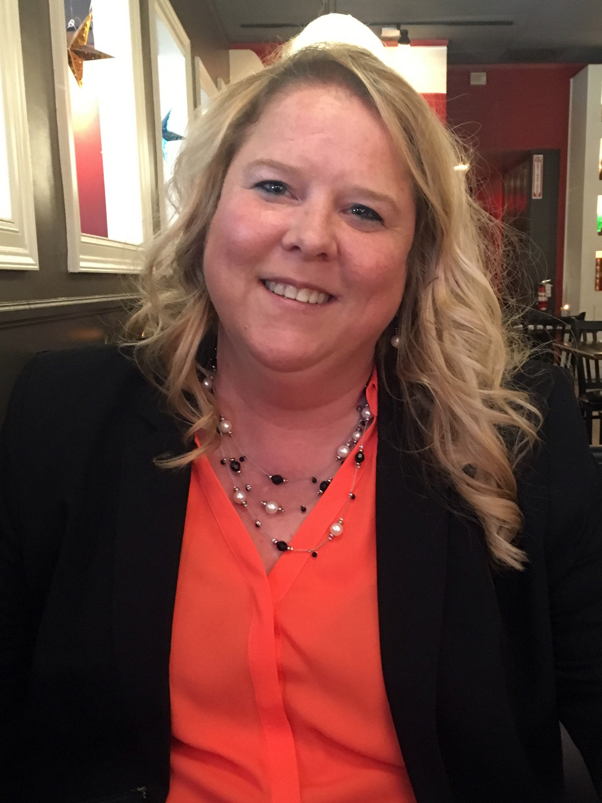

I have a bachelor’s degree from The University of North Carolina at Chapel Hill (UNC) in International Studies with a concentration in Political Science and Latin America. I recently graduated with a certificate from the UNC Coding Bootcamp.
I am a Project Manager and Business Development Associate who knows how to take user stories and realize them into a customized software experience. I am well educated in the Agile principles and values working with a backlog and sprints. I am familiar with Scrum methodology. I understand roadmaps, burndown, velocity and task definition. I know how to conduct Scrum planning, meetings, review and retrospectives. I have used Github extensively for version control. I have used Kanban for projects managed in Github. I have used MS Project for previous project tracking and Trello for web development projects. I have some exposure to Jira. I am a member of the Project Management Institute. I am familiar with using common processes for Project Management Methodology (PMM) and IT Service Management.
I work well independently and in a team. I bring issues and problems to resolution by working with all stakeholders in evaluating all the factors involved. I have worked with professionals from multiple time zones when scheduling was difficult. I have had the opportunity to develop excellent communication skills with many people from different backgrounds, educational levels and professional levels, including executives. I have an analytical mind, and this has been an advantage in all my positions. I am driven and have exceptional organizational skills as demonstrated by all my responsibilities in every position of my career. I have outstanding PowerPoint presentation skills. I have served in many positions working with project management, program and organizational management, financial management, research administration, and human resources. I have participated in strategic planning at the board of directors level and was responsible for implementing organizational visions.
My positions have afforded me the opportunity to effectively manage many projects at the Rome Foundation and at UNC with international cross functional teams from cradle to grave within budget and timeline working with all stakeholders.
One of the best compliments I ever received was in the acknowledgements of the Rome II scientific textbook of the Rome Foundation, when Dr. Drossman, the president and senior editor, thanked me for my “creative intelligence and tireless effort to keep all numerous projects and activities underway.”